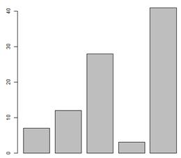
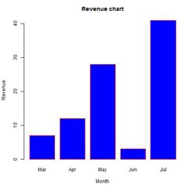
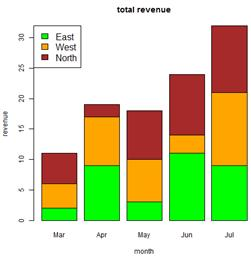

A bar chart represents data in rectangular bars with length of the bar proportional to the value of the variable. R uses the function barplot() to create bar charts. R can draw both vertical and Horizontal bars in the bar chart. In bar chart each of the bars can be given different colors.
Syntax
The basic syntax to create a bar-chart in R is –
barplot(H,xlab,ylab,main, names.arg,col)
Following is the description of the parameters used −
o H is a vector or matrix containing numeric values used in bar chart.
o xlab is the label for x axis.
o ylab is the label for y axis.
o main is the title of the bar chart.
o names.arg is a vector of names appearing under each bar.
o col is used to give colors to the bars in the graph.
Example
A simple bar chart is created using just the input vector and the name of each bar.
The below script will create and save the bar chart in the current R working directory.
# Create the data for the chart
H <- c(7,12,28,3,41)
# Give the chart file a name
png(file = "barchart.png")
# Plot the bar chart
barplot(H)
# Save the file
dev.off()
When we execute above code, it produces following result −

Bar Chart Labels, Title and Colors
The features of the bar chart can be expanded by adding more parameters. The main parameter is used to add title. The col parameter is used to add colors to the bars. The args.name is a vector having same number of values as the input vector to describe the meaning of each bar.
Example
The below script will create and save the bar chart in the current R working directory.
# Create the data for the chart
H <- c(7,12,28,3,41)
M <- c("Mar","Apr","May","Jun","Jul")
# Give the chart file a name
png(file = "barchart_months_revenue.png")
# Plot the bar chart
barplot(H,names.arg=M,xlab="Month"
,ylab="Revenue",col="blue",
main="Revenue chart",border="red")
# Save the file
dev.off()
When we execute above code, it produces following result −

Group Bar Chart and Stacked Bar Chart
We can create bar chart with groups of bars and stacks in each bar by using a matrix as input values.
More than two variables are represented as a matrix which is used to create the group bar chart and stacked bar chart.
# Create the input vectors.
colors = c("green","orange","brown")
months <- c("Mar","Apr","May","Jun","Jul")
regions <- c("East","West","North")
# Create the matrix of the values.
Values <- matrix(c(2,9,3,11,9,4,8,7,3,12,5,2,8,10,11), nrow = 3, ncol = 5, byrow = TRUE)
# Give the chart file a name
png(file = "barchart_stacked.png")
# Create the bar chart
barplot(Values, main = "total revenue", names.arg = months, xlab = "month", ylab = "revenue", col = colours)
# Add the legend to the chart
legend("topleft", regions, cex = 1.3, fill = colours)
# Save the file
dev.off()
